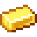
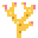
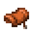
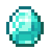

In het midden van elke Diepe Guhzee: een glazen bubbel op de zeebodem, met de winkel van de Zeemeerguh, reuzenschelpen en een wrak
The Guh BubbleDe Guhbubbel
The Guh Bubble: in the deep middle of every Diepe Guhzee lies a giant glass bubble shaped like a guh head on the sea floor. Walk into the Duikpost on its little island through its mouth and take the spiral staircase down to the sea floor (the bubble lift brings you back up). Inside there's air, a garden of glowing kaaskoraal, and the Zeemeerguh with her diving shop. Pay with pearls from the giant guh shells: an open shell holds a pearl, a closed one grows a new pearl after a while. She sells the duikhelm (breathe under water), the diving outfit for your guh (goggles, snorkel, swim ring; only sold here), a saddle, and kaaskoraal and mother-of-pearl blocks to build with. Swim out through a dive door: kaaskoraal blows air bubbles that let you breathe again, and just north of the bubble lies a sunken guh ship with a treasure chest. The super compass (Wonders) shows the way to the nearest one.
De Guhbubbel: in het diepe midden van elke Diepe Guhzee ligt op de zeebodem een reusachtige glazen bubbel in de vorm van een guhhoofd. Loop door de mond de Duikpost op zijn eilandje binnen en neem de wenteltrap naar de zeebodem (de bubbellift brengt je weer omhoog). Binnen is er lucht, een tuin vol gloeiend kaaskoraal en de Zeemeerguh met haar duikwinkeltje. Je betaalt met parels uit de reuzenschelpen: in een open schelp zit een parel, een dichte schelp krijgt na een tijdje een nieuwe. Ze verkoopt de duikhelm (ademen onder water), het duikpakje voor je guh (duikbril, snorkel en zwemband, alleen hier te koop), een zadel, en kaaskoraal en parelmoer om mee te bouwen. Zwem door een duikdeur naar buiten: kaaskoraal blaast luchtbelletjes waarmee je weer kunt ademen, en vlak ten noorden van de bubbel ligt een gezonken guhschip met een schatkist. Het superkompas (Wonderen) wijst de weg naar de dichtstbijzijnde.


One Guhbubbel in every seaEén Guhbubbel in elke zee
The Guhbubbel moved house: it no longer sits in a lagoon somewhere in the shallow Guhzee, but in the deep middle of every Diepe Guhzee, exactly one per sea. Look for the little island with the Duikpost in the middle of the sea (a guh head wearing diving goggles and a snorkel, with a jetty to its mouth): walk in through the mouth and take the spiral staircase in its glass tube down to the sea floor, then the glass tunnel into the dome. The bubble lift next to the stairs brings you back up. Under the dome (76 blocks wide, shaped like a guh head with two ear bubbles) there's air, a kaaskoraal garden and the Zeemeerguh's diving shop; outside lie a coral reef with giant guh shells and the sunken guh ship. The super compass (Wonders) or /locate structure guhs:onderwater shows the way. (In the picture the water is left out, so you can see the dome and the island.)
De Guhbubbel is verhuisd: hij ligt niet meer in een lagune ergens in de ondiepe Guhzee, maar in het diepe midden van elke Diepe Guhzee, precies één per zee. Zoek het eilandje met de Duikpost midden in de zee (een guhhoofd met een duikbril en een snorkel, met een steiger naar zijn mond): loop door de mond naar binnen en neem de wenteltrap in de glazen buis naar de zeebodem, en dan de glazen tunnel de koepel in. De bubbellift naast de trap brengt je weer omhoog. Onder de koepel (76 blokken breed, in de vorm van een guhhoofd met twee oorbubbels) is lucht, een kaaskoraaltuin en het duikwinkeltje van de Zeemeerguh; buiten liggen een koraalrif met reuzenschelpen en het gezonken guhschip. Het superkompas (Wonderen) of /locate structure guhs:onderwater wijst de weg. (Op het plaatje is het water weggelaten, zodat je de koepel en het eilandje ziet.)
LootBuit
| ItemVoorwerp | CountAantal | ChanceKans |
|---|---|---|
| 4–8 | oftenvaak | |
 Gouden staaf | 2–6 | oftenvaak |
| 8–20 | oftenvaak | |
| Prismarienkristallen | 3–9 | sometimessoms |
| Nautilusschelp | 1–2 | sometimessoms |
| 2–6 | sometimessoms | |
| 2–5 | sometimessoms | |
 Kaaskoraal | 2–6 | sometimessoms |
| Smaragd | 2–5 | sometimessoms |
 Zadel | 1 | sometimessoms |
 Diamant | 1–2 | rarelyzelden |
| Hart van de zee | 1 | rarelyzelden |